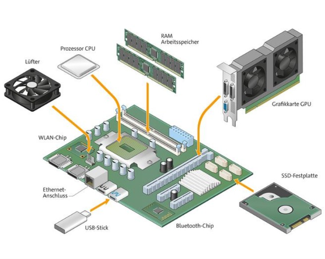
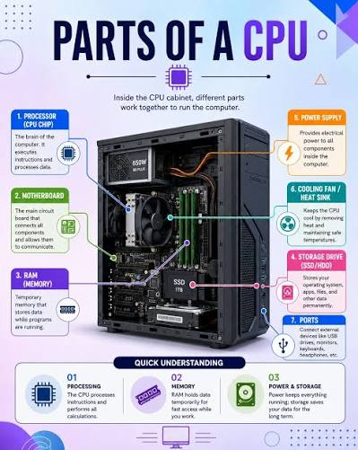
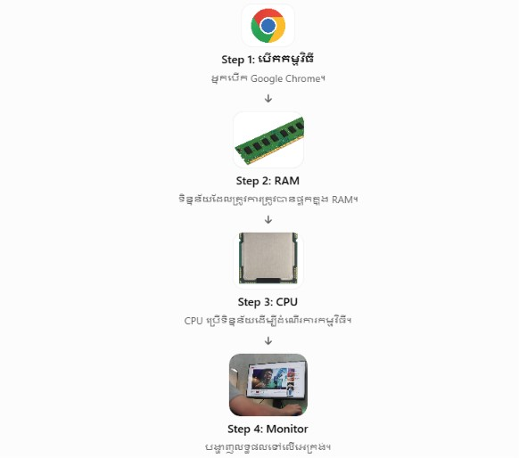

🖥️ មេរៀនគ្រឿងបន្លាស់កុំព្យូទ័រ (Hardware)
១. ការណែនាំអំពី Hardware
Hardware (ផ្នែករឹង) គឺជាផ្នែក ឬឧបករណ៍របស់កុំព្យូទ័រ ដែលយើងអាចមើលឃើញ និងប៉ះបានដោយដៃ។
Hardware (ផ្នែករឹង)
ឧទាហរណ៍៖
- Monitor (អេក្រង់)
- Keyboard (ក្ដារចុច)
- Mouse (កណ្ដុរ)
- CPU (Processor)
- RAM
- Hard Disk
- Motherboard

២. សមាសភាគសំខាន់ៗនៃ Computer
កុំព្យូទ័រដំណើរការបានអាស្រ័យលើ CPU (ខួរក្បាល), RAM (អង្គចងចាំបណ្តោះអាសន្ន), និង Storage (SSD/HDD)...
សមាសភាគសំខាន់ៗក្នុងប្រព័ន្ធកុំព្យូទ័រ
• បន្ទះមេ (Motherboard / Mainboard)
• ខួរក្បាល (CPU)
• អង្គចងចាំបណ្តោះអាសន្ន (RAM)
• អង្គចងចាំថាវនដ៍ (Storage: SSD / HDD)
• កាតបង្ហាញ (GPU / Graphics Card)
• អ្នកផ្គត់ផ្គង់ថាមពល (PSU / Power Supply Unit)
• ប្រព័ន្ធត្រជាក់ (Cooling System: Fans / Liquid Cooling)
• ឧបករណ៍បញ្ចូល និងបញ្ចេញទិន្នន័យ (Input/Output Devices)

៣. តួនាទីរបស់ CPU (Central Processing Unit)
CPU ត្រូវបានគេចាត់ទុកថាជាខួរក្បាលរបស់កុំព្យូទ័រ ដែលមានបញ្ជា និងគណនេយ្យរាល់កិច្ចការទាំងឡាយដែលបានបញ្ជូនមកពី Software និង Hardware ដទៃទៀត។
តួនាទីសំខាន់ៗរបស់ CPU
CPU មានមុខងារសំខាន់ៗដូចជា៖
1. Processing Data: ដំណើរការទិន្នន័យ។
2. Executing Instructions: អនុវត្តសេចក្ដីបញ្ជាពីកម្មវិធី។
3. Performing Calculations: គណនាលេខ និងប្រតិបត្តិការគណិតវិទ្យា។
4. Controlling Operations: គ្រប់គ្រងការងារផ្សេងៗនៅក្នុងកុំព្យូទ័រ។
ចំណាំ៖ CPU ដែលមាន GHz ខ្ពស់ជាង មិនមែនមានន័យថាលឿនជាងគ្រប់ករណីទេ។
ត្រូវមើល Core, Architecture និងជំនាន់ CPU ផងដែរ។

៤. RAM (Random Access Memory)
RAM (Random Access Memory) មានន័យថា អង្គចងចាំបណ្ដោះអាសន្ន។
RAM គឺជាផ្នែករបស់កុំព្យូទ័រ ដែលប្រើសម្រាប់រក្សាទុកទិន្នន័យ
និងកម្មវិធីដែលកំពុងដំណើរការ ដើម្បីឱ្យ CPU
អាចចូលប្រើទិន្នន័យទាំងនោះបានលឿន។
តួនាទីសំខាន់ៗរបស់ RAM
RAM មានមុខងារសំខាន់ៗដូចជា៖
1. Temporary Data Storage: រក្សាទុកទិន្នន័យបណ្ដោះអាសន្ន។
2. Running Applications: ជួយឱ្យកម្មវិធីដែលកំពុងបើកដំណើរការ។
3. Fast Data Access: អនុញ្ញាតឱ្យ CPU ចូលប្រើទិន្នន័យបានលឿន។
4. Multitasking: ជួយឱ្យកុំព្យូទ័រដំណើរការកម្មវិធីច្រើនក្នុងពេលតែមួយ។
ចំណាំ៖ RAM កាន់តែច្រើន
អាចជួយឱ្យអ្នកបើកកម្មវិធីច្រើនក្នុងពេលតែមួយបានកាន់តែប្រសើរ
ប៉ុន្តែវាក៏អាស្រ័យលើ CPU និងកម្មវិធីដែលប្រើផងដែរ។
